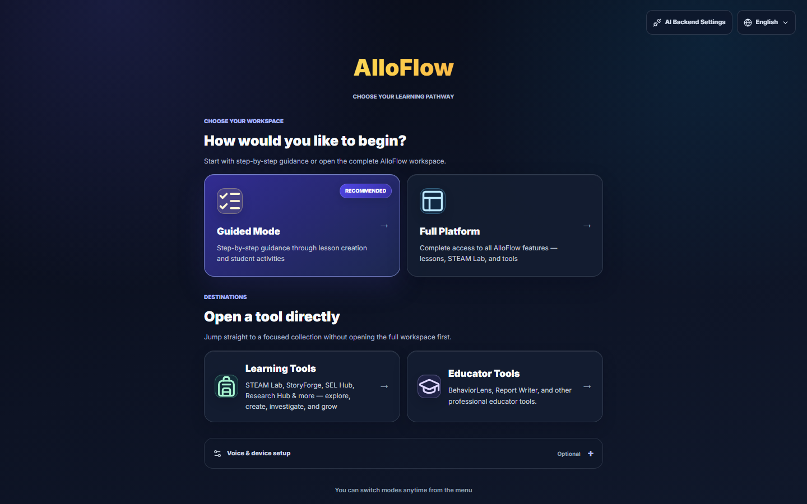
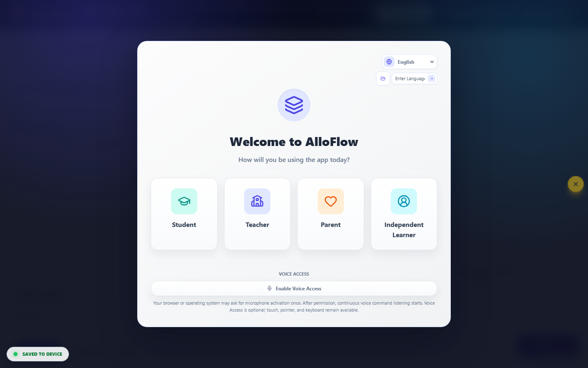
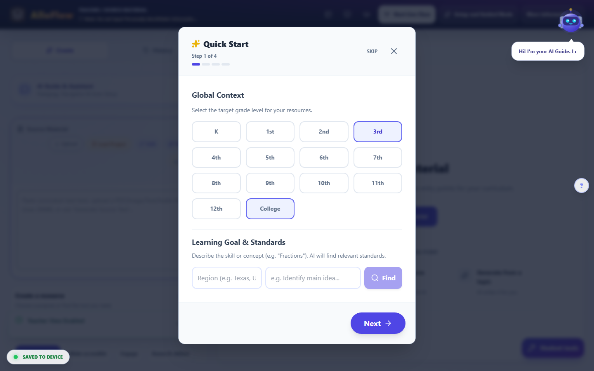

Start here: prepare your first student-ready resource
Choose an entry route and prepare a first student-ready resource.
- Best for
- First-time teacher
- Typical use
- About 15 minutes
Search the guide
Type one or more words to search every chapter.
AlloFlow is most useful when it helps you remove a specific barrier without changing the learning goal. Begin with one lesson you already teach, one trustworthy source, and one decision about what students need in order to participate. The platform can help create options; the teacher remains responsible for the content, rigor, accessibility, and way it is used.
For a first attempt, use Guided Mode and make one strong resource rather than exploring every tool. The process below usually fits into a planning period once you have your source ready.
Choose the right entry route
The Launch Pad offers several starting points. The wording can vary slightly by deployment or interface language.
The complete-workspace card is labeled Full AlloFlow in the Launch Pad. Some interface text and older deployments still call the same route Full Platform; Guided Setup is another label you may see for the guided route.

Interface reference captured August 13, 2026 from the public AlloFlow deployment. Labels and available destinations can vary by deployment.
| Entry route | Use it when | Good first task |
|---|---|---|
| Guided Mode | You want a recommended sequence with prompts and checkpoints. | Prepare and deliver one differentiated lesson package. |
| Full AlloFlow | You already know the workspace or need to move among several tools. | Revise an existing project or build a custom workflow. |
| Learning Tools | You want to open a focused student-facing experience. | Explore a reading, writing, STEM, research, or SEL activity. |
| Educator Tools | You need a teacher, specialist, accessibility, reporting, or leadership workflow. | Review evidence, improve a document, or prepare professional materials. |
If the teacher role is protected in your deployment, use the school-provided access method. Do not share a teacher access code with students. You can change routes later, so the first choice is not permanent.
Before you open AlloFlow
Have these four items ready:
- A clear learning goal written in student-friendly language.
- A short, trustworthy source such as an excerpt, directions, notes, or a teacher-created model.
- The barrier you want to reduce, such as decoding load, unfamiliar vocabulary, language demands, organization, or limited response options.
- A quick way to check whether students met the goal.
Use the same source you would be comfortable projecting or handing to students. Remove names, student IDs, grades, disability information, behavior notes, health information, and other personally identifying details before pasting or uploading anything. See Privacy and responsible AI before using sensitive material.
A first lesson in about fifteen minutes
1. Open Guided Mode
From the Launch Pad, choose Guided Mode, then select the teacher role if prompted. Guided Mode organizes the work into a focused path that includes Source Material, Assignment Directions & Goals, Preview/Package/Deliver, and Review/Finish. Your deployment may offer additional optional steps.

If you lose your place, turn on Help Mode from the header or press the question-mark key. Help Mode explains supported controls and may show keyboard shortcuts. Press Escape to close an open dialog before trying another route.

2. Add Source Material
Open Source Material and choose the route that fits what you have. Current workspaces may offer options such as opening a reading catalog, writing or pasting text, finding a resource online, generating from a topic, or importing a supported file.
Treat the source as the instructional ground truth for this lesson:
- Include only the portion students need.
- Preserve important headings, labels, examples, equations, and citations.
- Add context that would otherwise be supplied orally.
- Verify information before using it to generate student materials.
- Respect copyright and school rules for licensed content.
If you begin from a topic rather than a source, fact-check the resulting source before creating anything else from it. Generated material can sound confident while still being incomplete or wrong.
3. State the goal and important constraints
In Assignment Directions & Goals and the available setup controls, identify:
- What students should know or be able to do.
- The grade band and subject context.
- Language or vocabulary support that is instructionally appropriate.
- The expected depth of thinking, standard, or success criteria when relevant.
- Any format students must use for the final response.
Describe barriers and supports, not diagnoses. For example, write “provide a short glossary and sentence starters” rather than including a student's name or disability label. Keep the intellectual target intact: simplifying access to a text is different from simplifying the idea students must understand.
4. Create one anchor resource
Choose one output that directly serves the learning goal. Useful first choices include an adapted text, glossary, visual organizer, structured directions, short quiz, sentence frames, or another focused support.
Ask:
- Will students use this before, during, or after the core task?
- Does it help them understand the same important idea as their peers?
- Is it short enough to use during real class time?
- What will I learn from the way students respond?
Do not create five versions simply because the platform can. A smaller set of purposeful options is easier for students to navigate and easier for you to verify.
5. Review before you share
Read every student-facing part. Check names, dates, links, calculations, answer choices, examples, translations, cultural references, and reading level. Confirm that the answer key, if present, matches the questions and is not visible in the student version.
Then check the experience:
- Headings and directions are clear.
- Images have useful text alternatives or are marked decorative.
- Color is not the only way information is communicated.
- Keyboard focus moves in a sensible order.
- Read-aloud pronunciation is understandable.
- Language support preserves the intended meaning.
- Interactive controls work at the device size students will use.
Use the accessibility process in Accessibility and UDL for a fuller check.
6. Preview the student route
Preview the actual delivery format whenever possible, not only the teacher workspace. In Guided Mode, continue to Preview/Package/Deliver. If you create a homework link, use Test latest student link before distributing its QR code or URL. For a live lesson, test the join path on a second browser profile or student device if your school setup allows it.
The preview should answer three questions:
- Can a student tell what to do first?
- Can the student reach the content and submit or save the expected work?
- Is any teacher-only information visible?
If a feature depends on a microphone, audio output, AI provider, cloud service, or school filter, test it on the school network and device type students will use. Availability and persistence differ among hosted, desktop, embedded, and locally configured deployments.
7. Deliver and save
Choose the delivery method that matches the lesson:
- Use a Live Session when you need teacher pacing, in-the-moment checks, or targeted routing.
- Use Create Homework QR or another assignment link for independent access when that route is configured.
- Use an accessible document or print export when students need a stable handout.
- Use your school's approved learning-management workflow when a supported package or export is available.
Before closing, use Save Project to download the project file when that option is available. Store it in an approved location with a useful name such as “ecosystems-food-webs-2026-08-13.” A project file is the safest way to resume in deployments where browser work does not persist after a tab closes. Reopen it through Load Project and confirm that the important resources return before relying on it for class.
The teacher review gate
Do not distribute a generated resource until you can answer yes to each item:
- The learning goal is accurate and visible.
- The source is trustworthy and appropriate to share.
- Student information has been removed.
- Instructions match the task students will actually complete.
- The level of thinking has not been unintentionally reduced.
- Facts, translations, examples, calculations, and answer keys were checked.
- The student route was previewed.
- An accessible alternative exists for any feature a student cannot use.
- You know what evidence you will collect and how you will respond to it.
- The project or final export was saved in an approved location.
Generated content is a draft, even when it looks polished. Teacher approval is an instructional step, not an optional cleanup.
What students should experience
A strong AlloFlow lesson should feel like one coherent class task with useful choices, not a collection of unrelated apps. Students should know:
- The shared learning goal.
- Which resource or pathway is theirs.
- Whether they may choose another support.
- How to ask for help without disclosing private information.
- What they will create, answer, discuss, or submit.
- What happens when they finish.
Avoid labeling pathways as “low,” “easy,” or “special.” Use neutral names tied to purpose, such as “audio and glossary,” “visual overview,” “practice with examples,” or “extension.” When possible, offer supports to the whole class while privately directing students to the options most likely to help.
The smallest possible start: one tool, one link
You do not have to begin with a lesson at all. Every interactive STEAM Lab tool has its own direct web address that opens just that tool, with no sign-in for you or your students. Pasting one such link into whatever you already use (your LMS, a slide, a message home) is the lowest-commitment way to try AlloFlow, share it with a colleague, or give a family one good activity. When you are ready for more than one tool, come back to the fifteen-minute lesson above.
If something does not work
Protect instructional time first. Keep a stable fallback ready: the original source, a downloadable handout, or a simple discussion prompt. If a module is still loading, wait briefly, use its retry control if shown, or return to the previous view. If generation fails, preserve your source and directions before refreshing.
For a systematic recovery sequence, see Troubleshooting. For planning a fuller package, continue to Prepare a lesson. To teach it synchronously, continue to Live sessions.